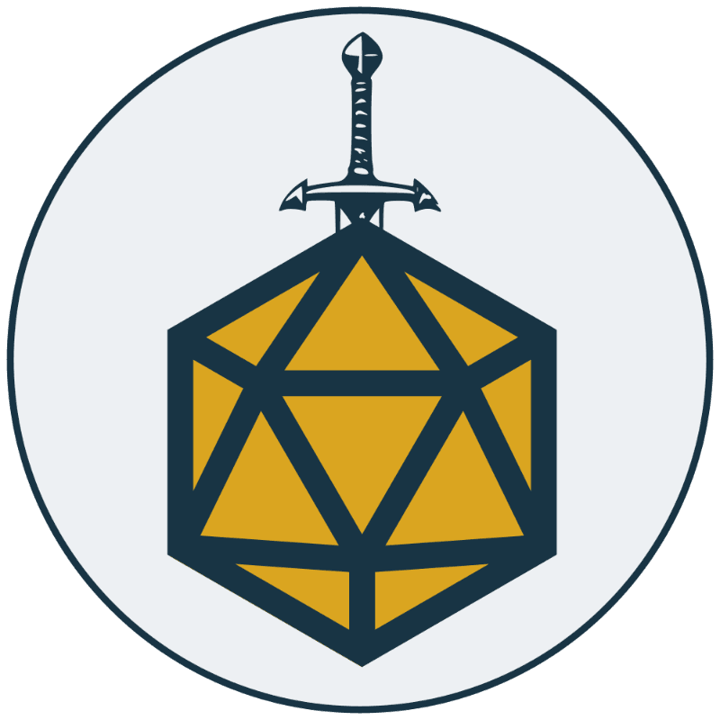
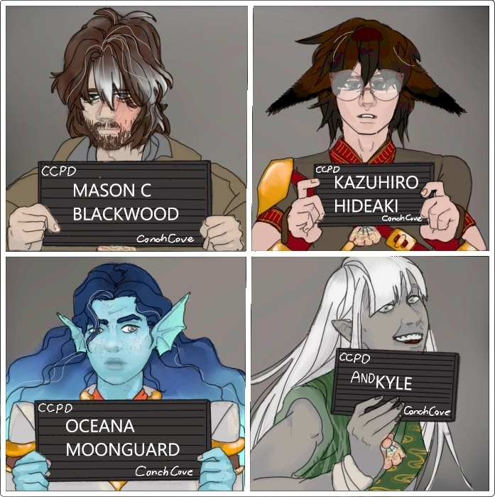

The Legacy of Peridos
Premise
In the city-state of Peridos, there are a few things you can rely on. The guards that follow Tyra will always be on patrol, there will always be a new invention in Djethai, and the clergy of the church of Hermyra will always be greedy. However, one thing you can never be sure of is what lies around the next corner. Of course, that's to be expected. The cities were chaotic enough before they were united by the gods hundreds of years ago, or so the Epic says.
That was, at least, until Lyman Bryvenhelm took the throne 34 years ago. The runaway prince returned from his adventures to claim the throne of Peridos, and the city changed, almost overnight. Suddenly, the Mirage carnival was a much friendlier place, so long as you didn't wander too deep. The fae stopped tricking random innocents into deals that would leave them destitute at best. The docks stopped seeming so sinister. The legendary wizard, Djehuti, returned from his seclusion to act as an advisor to the king, and both of them became beloved by the people. Everything seemed to be going alright.
Until today.
You don't want it to be true. You'd heard rumors that Djehuti's health was in decline. You had heard rumors that King Bryvenhelm was sick. But to have both of them pass at the exact same time? The city would surely fall to shambles. All you can do is hope and pray that-
Suddenly, the air is pierced by a sound. A voice. You recognize it as Djehuti's. The elf's distinct accent, which seemed as ancient as the city itself, was distinct in its own way.
"I'm sorry, children," the voice says, "I tried to buy you as much time as I could. I can't sustain myself, King Bryvenhelm, and the seal on the gate any longer. I must join my siblings in the realm of Hedasia. The keystones to my labyrinth will be found by those that stand the best chance at getting what you need. After I pass, the seal will last one year. That is all the time I can give you. Farewell, Peridos."
Just as the voice finishes, the bells of the castle let out a mournful peal, announcing the death of the king. Another afterwards, marking the passing of a trusted advisor.
All at once, the silence breaks. Anxious chatter fills the streets. Several screams can be heard over the din. Lyman is dead. Shermain is king.
You return home in a daze. Shermain wasn't ready to take the throne, was he? Your mind is spinning with the repercussions. As you think about what this means for you, your eyes settle on a small wooden box that you swear wasn't there 30 seconds ago. The symbol of Djehuti is engraved on the top. You tentatively approach it. You've never seen this box before.
You open the top of the box. Inside is a small circular stone, carved into the shape of an unfamiliar creature. As you pick it up, you feel about pulse of energy thrum up from the ground beneath your feet. For a moment, you are aware of a massive system of tunnels, caves, and rooms stretching downward. Your awareness of the massive network fades, and you are left with a feeling that you are in way over your head...
Player Characters
No characters have been made for this campaign. Reach out to the DM through the discord server linked below to talk about creating a character!
Non-Player Characters (NPCs)
The Children of the Abyss

A group of heroes that are well known for their adventures across the continent, the Children of the Abyss are one of the parties assembled by King Shermain to explore the dugeons underneath the city. Perhaps you will encounter them as you explore.
Session Summaries
There haven't been any sessions for this campaign yet.